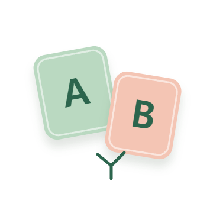

고민의 무게와 선택지의 온도를 맞춰보고 있어요.
갈림길작은 선택, 같이 웃는 하루

이거? 저거?
오늘은 골라드릴게요.
작은 고민 하나, 두 가지 선택.
최근 갈림길
연속 기록
0일
오늘의 무드
흔들림
손바닥에 담긴
나의 작은 이야기.
가볍게 들여다보는 AI 손금.
사진 처리 안내
선택한 사진은 해석을 위해 앱 서버를 거쳐 OpenAI API로 전송됩니다.
앱 서버는 사진을 파일로 저장하지 않습니다. 외부 처리에는 OpenAI의 데이터 정책이 적용됩니다.
주요 선과 전체 인상을 살펴보고 있어요.
우리 사이,
어떤 케미일까?
둘이 보면 더 재밌는 오늘의 궁합.
서로 닮은 점과 다른 점을 펼쳐보고 있어요.
쌓여가는 나의 선택
0 cards편하게 쓰기 위한
작은 설정들.
설정
갈림길
갈림길은 정답을 대신 정해주는 앱이 아니라, 오늘의 고민을 A/B 장면으로 펼쳐 보여주는 선택 의식 앱입니다.
별자리와 손금은 예언이 아니라, 내 감정과 행동을 바라보는 언어로 사용됩니다.
AI 손금 상태
서버 상태를 확인하고 있어요.
갈림길의 모든 리포트는 오락 및 자기성찰용입니다. 실제 미래, 건강, 투자, 법률 판단을 보장하지 않습니다.